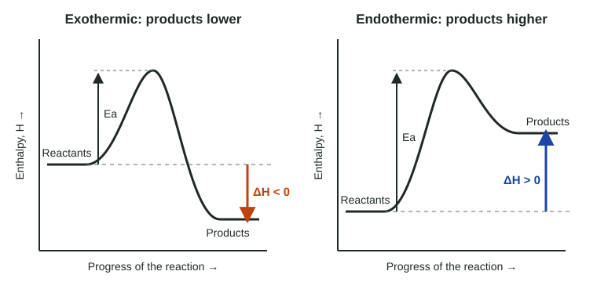

In Unit 5 you used reaction energy profiles to talk about activation energy and speed. The same picture also answers the question of Unit 6: does the reaction release energy or absorb it? This page shows how to read an energy diagram for ΔH, how to draw one from a description, and how to avoid mixing up ΔH with the activation energy.
What the diagram shows

The vertical axis is enthalpy, the energy stored in the system's bonds and attractions. The horizontal axis is the progress of the reaction, from reactants on the left to products on the right. It is not time: a reaction diagram does not tell you how many seconds anything takes.
Three features matter:
- the reactant level, a flat line on the left;
- the product level, a flat line on the right;
- the hump in between, whose top is the transition state.
Reading ΔH from the end levels
ΔH is a difference, always "final minus initial":
ΔH = H(products) − H(reactants)
If the products sit lower, the system lost energy on the way: ΔH is negative and the reaction is exothermic. If the products sit higher, the system gained energy: ΔH is positive and the reaction is endothermic. The arrow you draw for ΔH starts at the reactants and points to the products, down for exothermic and up for endothermic.
Worked example. On a diagram, the reactants sit at 125 kJ, the top of the hump at 214 kJ and the products at 38 kJ (all per mole of reaction). Find ΔH, the forward activation energy and the reverse activation energy.
ΔH = H(products) − H(reactants) = 38 kJ − 125 kJ = −87 kJ/mol. The products are lower, so the reaction is exothermic.
Ea(forward) = top − reactants = 214 kJ − 125 kJ = 89 kJ/mol.
Ea(reverse) = top − products = 214 kJ − 38 kJ = 176 kJ/mol.
Check: Ea(reverse) = Ea(forward) − ΔH = 89 − (−87) = 176 kJ/mol. ✓
Reading the hump: activation energy is a separate quantity
The climb from the starting level to the top of the hump is the activation energy, Ea. It controls how fast the reaction goes (topic 5.6), but it says nothing about the sign of ΔH. An exothermic reaction can have a tall hump (methane and oxygen sit in your kitchen without reacting until a spark lights them) and an endothermic reaction can have a small one.
A catalyst gives the reaction a different path with a lower hump. The reactants and products are the same substances, so their levels do not move, and ΔH does not change.
The reverse reaction
Read the same diagram from right to left. The old products are now the reactants. So:
- ΔH(reverse) = −ΔH(forward): same size, opposite sign.
- Ea(reverse) is measured from the product level to the top. For an exothermic forward reaction, the reverse climb is longer, by exactly the size of ΔH.
Drawing a diagram from words
To sketch a diagram for "an endothermic reaction with a large activation energy": draw the reactant level, draw the product level above it, then join them with a hump whose top is well above both. Label the axes (enthalpy; progress of the reaction), label reactants and products, and draw two arrows: ΔH from the reactant level to the product level, and Ea from the reactant level to the top. Exam graders look for the arrows starting at the right level and pointing the right way.
| Reading | Measured from | Measured to |
|---|---|---|
| ΔH (forward) | reactant level | product level |
| Ea (forward) | reactant level | top of the hump |
| Ea (reverse) | product level | top of the hump |